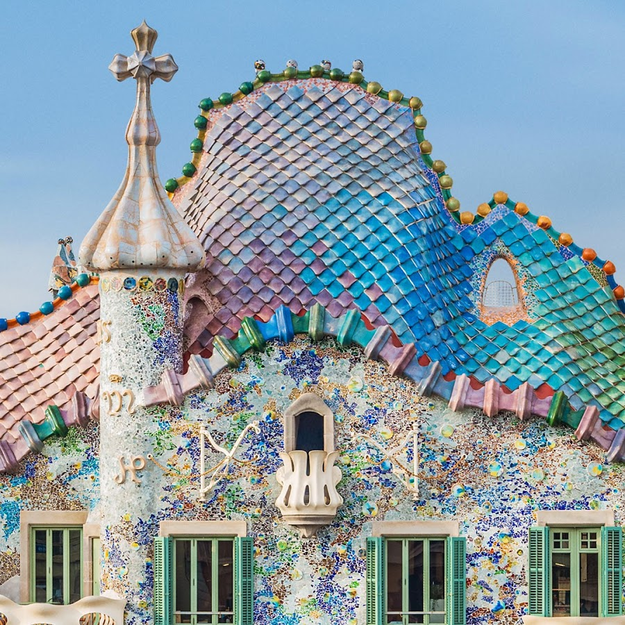

Casa Batlló
Casa Batlló is a building in the center of Barcelona, Spain. It was designed by Antoni Gaudí, and is considered one of his masterpieces. A remodel of a previously built house, it was redesigned in 1904 by Gaudí and has been refurbished several times after that.

s